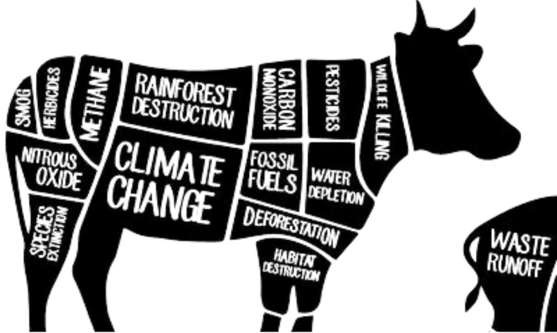

Curious about going vegan or plant-based?
There are countless legit reasons to quit eating animals.
As we here at Friends Not Food want to stay true to our mission of appealing to as many peeps as possible the key info below will be suitable for all ages & sensitivities.
For the down, very dirty, & often disturbing details - just google 'factory farming' and grab some carrots as you spiral down that rabbit hole.
For more facts, figures, and a bit of how-to - we'd like to introduce you to our friends at Vegan Outreach.
Never eaten meat
Feast your eyes on some others who seem to get plenty of protein:
GreatVeganAthletes.com
A DOCUMENTARY THAT WILL ROCK AND INSPIRE THE ENVIRONMENTAL MOVEMENT
- DARREN ARONOFSKY, DIRECTOR OF "NOAH" AND "BIACK SWAN'
COWSPIRACY MAY BE THE MOST IMPORTANT FILM MADE TO INSPIRE SAVING THE PLANET.
- LOUIE PSIHOYOS, OSCAR-WINNING DIRECTOR OF "THE COVE'
